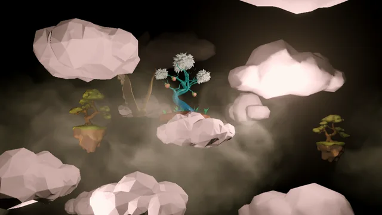
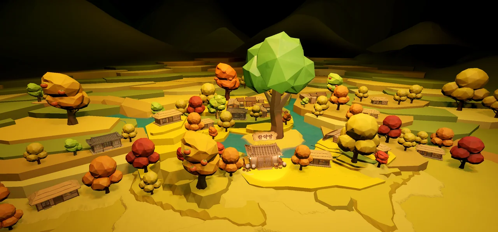
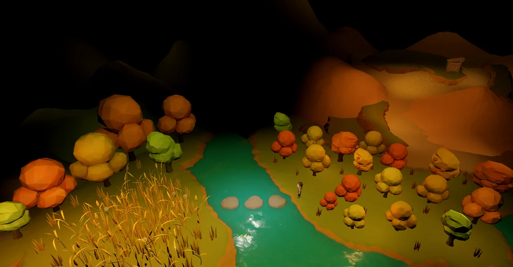
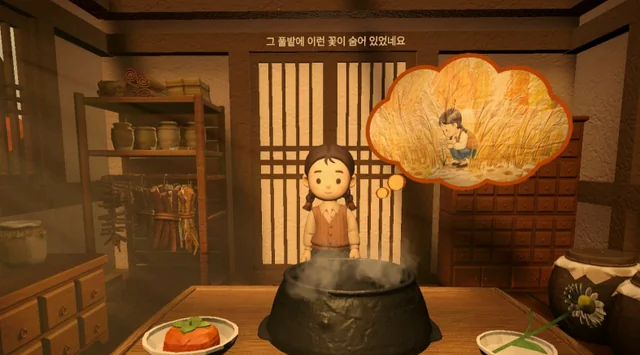

한눈에 담는 세계
신령의 시점에서 천계와 지하를 바라봅니다. 작은 세계 곳곳에 무엇이 있는지 천천히 살펴보세요.
작은 세계에서 만나는 VR 이야기
A Dose of Heart
아이가 돌아오는 동안,
당신은 신령이 되어 약을 완성합니다.
길을 잘못 든 아이와 약을 만드는 신령.
가을빛 작은 마을에서 두 사람의 마음이 만납니다.

01 / 작품 미리 보기
작품 속 공간과 상호작용을
플레이 영상으로 먼저 만나보세요.

02 / 이야기
아픈 아버지의 약을 구하러 나선 아이.
그만 버스를 반대로 타고 맙니다.
마을 한약방에서는 신령이 아직 약을 만들고 있습니다. 아이가 돌아오는 동안, 신령에게는 조금 더 시간이 생겼습니다.
당신은 그 신령이 됩니다. 작은 세계를 살피며 약을 만듭니다. 아이가 돌아오기를 기다리면서요.
아이는 감나무골을 돌아오며 부모를 생각해 작은 것들을 챙깁니다. 그것들이 약을 완성하는 마지막 재료가 됩니다.
길을 돌아가고 있다고 느끼는 사람에게, 그 길에서도 소중한 무언가를 만날 수 있다는 말을 건네고 싶었습니다.
03 / 당신의 자리
한눈에 담기는 디오라마에서
직접 들어가 만나는 세계로.

신령의 시점에서 천계와 지하를 바라봅니다. 작은 세계 곳곳에 무엇이 있는지 천천히 살펴보세요.
내려다보던 디오라마 안으로 시점이 바뀝니다. 멀리서 보던 마을을 이제 안에서 만나게 됩니다.

한약방의 신령이 되어 직접 손을 움직입니다. 아이가 돌아오는 동안 약을 완성해 갑니다.
04 / 세계 둘러보기
감나무골에서 한약방까지.
사진을 누르면 크게 볼 수 있습니다.
05 / 체험·전시 안내
작품 시연과 전시를 준비하고 계신가요?
체험 방법과 작품에 관한 궁금한 점을 알려주세요.
공동 연출 · 개발
공동 연출 · 기획